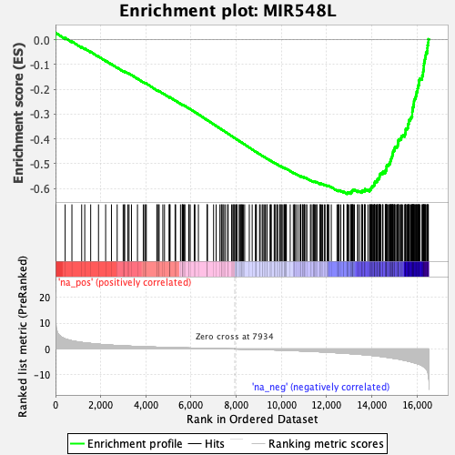
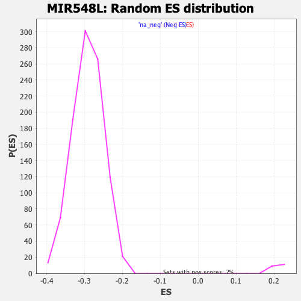

| | | Dataset | DE_genes2 |
| Phenotype | NoPhenotypeAvailable |
| Upregulated in class | na_neg |
| GeneSet | MIR548L |
| Enrichment Score (ES) | -0.6222699 |
| Normalized Enrichment Score (NES) | -2.1328344 |
| Nominal p-value | 0.0 |
| FDR q-value | 0.0 |
| FWER p-Value | 0.0 |
Table: GSEA Results Summary

Fig 1: Enrichment plot: MIR548L
Profile of the Running ES Score & Positions of GeneSet Members on the Rank Ordered List
| PROBE | GENE SYMBOL | GENE_TITLE | RANK IN GENE LIST | RANK METRIC SCORE | RUNNING ES | CORE ENRICHMENT | | 1 | CXCL3 | | | 1 | 21.432 | 0.0284 | No |
| 2 | FNDC3B | | | 427 | 3.886 | 0.0073 | No |
| 3 | IST1 | | | 726 | 3.154 | -0.0068 | No |
| 4 | CYP8B1 | | | 1158 | 2.527 | -0.0301 | No |
| 5 | KLF10 | | | 1294 | 2.362 | -0.0352 | No |
| 6 | TAB1 | | | 1557 | 2.123 | -0.0486 | No |
| 7 | DYNLT1 | | | 1903 | 1.838 | -0.0674 | No |
| 8 | PPIC | | | 2219 | 1.606 | -0.0847 | No |
| 9 | TLR2 | | | 2476 | 1.456 | -0.0985 | No |
| 10 | SKI | | | 2729 | 1.318 | -0.1123 | No |
| 11 | ACYP2 | | | 2994 | 1.198 | -0.1270 | No |
| 12 | MEX3D | | | 3052 | 1.174 | -0.1290 | No |
| 13 | ZBTB5 | | | 3058 | 1.172 | -0.1277 | No |
| 14 | TRIOBP | | | 3198 | 1.111 | -0.1348 | No |
| 15 | GNA14 | | | 3256 | 1.089 | -0.1369 | No |
| 16 | PLEKHJ1 | | | 3363 | 1.052 | -0.1420 | No |
| 17 | KCTD5 | | | 3627 | 0.959 | -0.1570 | No |
| 18 | ARHGEF3 | | | 3884 | 0.871 | -0.1716 | No |
| 19 | ATG16L1 | | | 3948 | 0.851 | -0.1743 | No |
| 20 | PROM1 | | | 3985 | 0.841 | -0.1754 | No |
| 21 | FAM47E | | | 4019 | 0.834 | -0.1764 | No |
| 22 | PLEKHG1 | | | 4484 | 0.696 | -0.2040 | No |
| 23 | FBXO25 | | | 4507 | 0.691 | -0.2045 | No |
| 24 | NENF | | | 4558 | 0.676 | -0.2067 | No |
| 25 | NUDT11 | | | 4586 | 0.665 | -0.2075 | No |
| 26 | GOLPH3L | | | 4749 | 0.625 | -0.2166 | No |
| 27 | F3 | | | 4824 | 0.611 | -0.2204 | No |
| 28 | ESR1 | | | 5037 | 0.561 | -0.2327 | No |
| 29 | SLC9A4 | | | 5040 | 0.560 | -0.2321 | No |
| 30 | GCNT2 | | | 5041 | 0.560 | -0.2313 | No |
| 31 | SAXO2 | | | 5070 | 0.552 | -0.2323 | No |
| 32 | PCDHB16 | | | 5292 | 0.494 | -0.2453 | No |
| 33 | DYNC1I2 | | | 5317 | 0.488 | -0.2461 | No |
| 34 | CBWD3 | | | 5531 | 0.444 | -0.2587 | No |
| 35 | SLAIN1 | | | 5606 | 0.426 | -0.2627 | No |
| 36 | COX20 | | | 5621 | 0.422 | -0.2630 | No |
| 37 | MAST4 | | | 5624 | 0.421 | -0.2625 | No |
| 38 | ZMIZ1 | | | 5659 | 0.414 | -0.2641 | No |
| 39 | COL4A4 | | | 5707 | 0.403 | -0.2664 | No |
| 40 | FOXC1 | | | 5725 | 0.400 | -0.2669 | No |
| 41 | ITGB8 | | | 5895 | 0.366 | -0.2769 | No |
| 42 | ADAMTS1 | | | 5908 | 0.364 | -0.2771 | No |
| 43 | CSNK1D | | | 5963 | 0.353 | -0.2800 | No |
| 44 | NFKB1 | | | 6140 | 0.317 | -0.2904 | No |
| 45 | ACVR1C | | | 6173 | 0.311 | -0.2920 | No |
| 46 | CCDC80 | | | 6324 | 0.281 | -0.3009 | No |
| 47 | ERBB4 | | | 6704 | 0.201 | -0.3240 | No |
| 48 | SEMA3D | | | 6716 | 0.199 | -0.3244 | No |
| 49 | PRDM11 | | | 6719 | 0.198 | -0.3242 | No |
| 50 | IL20RA | | | 6996 | 0.156 | -0.3410 | No |
| 51 | INPP5A | | | 7109 | 0.132 | -0.3478 | No |
| 52 | GRIP1 | | | 7276 | 0.101 | -0.3579 | No |
| 53 | ERO1A | | | 7339 | 0.091 | -0.3616 | No |
| 54 | ZKSCAN3 | | | 7362 | 0.086 | -0.3628 | No |
| 55 | PTGES3L | | | 7410 | 0.080 | -0.3656 | No |
| 56 | ANKRD22 | | | 7452 | 0.074 | -0.3680 | No |
| 57 | TMTC1 | | | 7524 | 0.060 | -0.3723 | No |
| 58 | DCLK1 | | | 7621 | 0.044 | -0.3782 | No |
| 59 | KLF8 | | | 7639 | 0.042 | -0.3792 | No |
| 60 | SH3RF1 | | | 7793 | 0.019 | -0.3886 | No |
| 61 | PPARGC1B | | | 7847 | 0.011 | -0.3918 | No |
| 62 | SLC30A4 | | | 7890 | 0.005 | -0.3944 | No |
| 63 | PPP6C | | | 7898 | 0.005 | -0.3948 | No |
| 64 | PGM2 | | | 7941 | -0.001 | -0.3974 | No |
| 65 | CPNE1 | | | 8003 | -0.013 | -0.4012 | No |
| 66 | HIVEP2 | | | 8007 | -0.013 | -0.4013 | No |
| 67 | SLC35D1 | | | 8033 | -0.017 | -0.4029 | No |
| 68 | ACVR2A | | | 8129 | -0.030 | -0.4087 | No |
| 69 | FOXF2 | | | 8142 | -0.032 | -0.4094 | No |
| 70 | VAV3 | | | 8200 | -0.042 | -0.4128 | No |
| 71 | RHOQ | | | 8219 | -0.045 | -0.4139 | No |
| 72 | CCSER1 | | | 8243 | -0.048 | -0.4152 | No |
| 73 | TMEM30A | | | 8275 | -0.052 | -0.4171 | No |
| 74 | SP1 | | | 8313 | -0.059 | -0.4193 | No |
| 75 | CAPRIN1 | | | 8372 | -0.070 | -0.4228 | No |
| 76 | ANKRD44 | | | 8576 | -0.107 | -0.4351 | No |
| 77 | XKR9 | | | 8704 | -0.130 | -0.4428 | No |
| 78 | MTF1 | | | 8848 | -0.161 | -0.4514 | No |
| 79 | LRP1B | | | 8868 | -0.164 | -0.4523 | No |
| 80 | CCNY | | | 8891 | -0.169 | -0.4535 | No |
| 81 | ZNF493 | | | 9030 | -0.200 | -0.4617 | No |
| 82 | MEGF11 | | | 9059 | -0.205 | -0.4632 | No |
| 83 | GPR155 | | | 9147 | -0.225 | -0.4682 | No |
| 84 | RRAS2 | | | 9180 | -0.234 | -0.4699 | No |
| 85 | ZXDC | | | 9231 | -0.250 | -0.4727 | No |
| 86 | MSI2 | | | 9281 | -0.263 | -0.4753 | No |
| 87 | OTUD1 | | | 9353 | -0.277 | -0.4793 | No |
| 88 | TET2 | | | 9359 | -0.278 | -0.4793 | No |
| 89 | ZNF107 | | | 9493 | -0.312 | -0.4871 | No |
| 90 | HECA | | | 9527 | -0.317 | -0.4887 | No |
| 91 | NBEA | | | 9550 | -0.323 | -0.4896 | No |
| 92 | CARF | | | 9678 | -0.363 | -0.4969 | No |
| 93 | VGLL3 | | | 9701 | -0.369 | -0.4978 | No |
| 94 | MBOAT2 | | | 9739 | -0.379 | -0.4996 | No |
| 95 | AGFG1 | | | 9805 | -0.402 | -0.5031 | No |
| 96 | TBC1D8B | | | 9830 | -0.408 | -0.5040 | No |
| 97 | PDZRN4 | | | 9919 | -0.433 | -0.5088 | No |
| 98 | FBXL5 | | | 9939 | -0.440 | -0.5094 | No |
| 99 | ABCC9 | | | 9991 | -0.458 | -0.5120 | No |
| 100 | CPNE4 | | | 9993 | -0.459 | -0.5114 | No |
| 101 | KCNG3 | | | 10061 | -0.477 | -0.5149 | No |
| 102 | DLG2 | | | 10116 | -0.495 | -0.5176 | No |
| 103 | FGD6 | | | 10132 | -0.499 | -0.5179 | No |
| 104 | ZNF257 | | | 10159 | -0.512 | -0.5188 | No |
| 105 | RORA | | | 10163 | -0.513 | -0.5183 | No |
| 106 | TBL1XR1 | | | 10213 | -0.529 | -0.5206 | No |
| 107 | PDK1 | | | 10214 | -0.529 | -0.5199 | No |
| 108 | SYNJ1 | | | 10387 | -0.584 | -0.5297 | No |
| 109 | UBE2A | | | 10524 | -0.634 | -0.5373 | No |
| 110 | SFT2D1 | | | 10571 | -0.651 | -0.5392 | No |
| 111 | RSBN1 | | | 10590 | -0.660 | -0.5395 | No |
| 112 | IRAK1BP1 | | | 10642 | -0.675 | -0.5417 | No |
| 113 | EMB | | | 10728 | -0.701 | -0.5460 | No |
| 114 | KLF3 | | | 10825 | -0.737 | -0.5510 | No |
| 115 | LRRC59 | | | 10845 | -0.741 | -0.5512 | No |
| 116 | SLC25A21 | | | 10853 | -0.742 | -0.5506 | No |
| 117 | SMAD4 | | | 10926 | -0.775 | -0.5540 | No |
| 118 | ATP8A1 | | | 10938 | -0.777 | -0.5537 | No |
| 119 | PDLIM5 | | | 10987 | -0.796 | -0.5556 | No |
| 120 | ZCCHC2 | | | 11012 | -0.807 | -0.5560 | No |
| 121 | STK39 | | | 11013 | -0.807 | -0.5549 | No |
| 122 | DOCK4 | | | 11072 | -0.832 | -0.5574 | No |
| 123 | FEM1C | | | 11125 | -0.851 | -0.5594 | No |
| 124 | SNX16 | | | 11280 | -0.918 | -0.5677 | No |
| 125 | CBR4 | | | 11316 | -0.931 | -0.5686 | No |
| 126 | WDR11 | | | 11401 | -0.969 | -0.5725 | No |
| 127 | ZNF470 | | | 11408 | -0.972 | -0.5716 | No |
| 128 | RNF146 | | | 11441 | -0.986 | -0.5723 | No |
| 129 | PTPN13 | | | 11449 | -0.986 | -0.5714 | No |
| 130 | E2F4 | | | 11493 | -1.002 | -0.5727 | No |
| 131 | MRPS36 | | | 11554 | -1.029 | -0.5751 | No |
| 132 | NFAT5 | | | 11568 | -1.034 | -0.5745 | No |
| 133 | IGSF11 | | | 11702 | -1.086 | -0.5812 | No |
| 134 | CRBN | | | 11711 | -1.091 | -0.5803 | No |
| 135 | PDCD6IP | | | 11732 | -1.099 | -0.5801 | No |
| 136 | AAK1 | | | 11775 | -1.118 | -0.5812 | No |
| 137 | ZEB2 | | | 11823 | -1.141 | -0.5826 | No |
| 138 | ZDHHC20 | | | 11896 | -1.177 | -0.5854 | No |
| 139 | MCMDC2 | | | 11931 | -1.189 | -0.5859 | No |
| 140 | RAP1A | | | 12021 | -1.232 | -0.5898 | No |
| 141 | GNG12 | | | 12036 | -1.238 | -0.5890 | No |
| 142 | MBD2 | | | 12072 | -1.259 | -0.5895 | No |
| 143 | ERO1B | | | 12094 | -1.272 | -0.5891 | No |
| 144 | LIX1L | | | 12204 | -1.327 | -0.5941 | No |
| 145 | HOOK1 | | | 12458 | -1.453 | -0.6077 | No |
| 146 | GPCPD1 | | | 12511 | -1.477 | -0.6090 | No |
| 147 | SPCS3 | | | 12525 | -1.488 | -0.6078 | No |
| 148 | ABHD13 | | | 12554 | -1.508 | -0.6075 | No |
| 149 | PTPN2 | | | 12627 | -1.546 | -0.6099 | No |
| 150 | SEC61A2 | | | 12747 | -1.613 | -0.6151 | No |
| 151 | BRWD3 | | | 12760 | -1.622 | -0.6137 | No |
| 152 | PRKAR2A | | | 12900 | -1.713 | -0.6200 | Yes |
| 153 | PIK3CA | | | 12907 | -1.721 | -0.6181 | Yes |
| 154 | COL6A3 | | | 12914 | -1.723 | -0.6162 | Yes |
| 155 | UBASH3B | | | 12954 | -1.745 | -0.6163 | Yes |
| 156 | RAP1B | | | 12997 | -1.768 | -0.6165 | Yes |
| 157 | SETD7 | | | 13077 | -1.814 | -0.6190 | Yes |
| 158 | SLC9A2 | | | 13085 | -1.820 | -0.6170 | Yes |
| 159 | CNOT6L | | | 13089 | -1.820 | -0.6147 | Yes |
| 160 | TBCA | | | 13091 | -1.821 | -0.6124 | Yes |
| 161 | CBWD6 | | | 13131 | -1.843 | -0.6123 | Yes |
| 162 | STEAP2 | | | 13135 | -1.849 | -0.6101 | Yes |
| 163 | ZBTB10 | | | 13146 | -1.858 | -0.6082 | Yes |
| 164 | SENP1 | | | 13162 | -1.868 | -0.6067 | Yes |
| 165 | CANX | | | 13199 | -1.890 | -0.6064 | Yes |
| 166 | ADAM17 | | | 13231 | -1.911 | -0.6058 | Yes |
| 167 | CNEP1R1 | | | 13372 | -2.010 | -0.6117 | Yes |
| 168 | ACTR3 | | | 13382 | -2.016 | -0.6096 | Yes |
| 169 | USP38 | | | 13462 | -2.074 | -0.6117 | Yes |
| 170 | AQP11 | | | 13556 | -2.136 | -0.6146 | Yes |
| 171 | C12orf66 | | | 13561 | -2.139 | -0.6120 | Yes |
| 172 | AADAC | | | 13567 | -2.142 | -0.6095 | Yes |
| 173 | GOPC | | | 13596 | -2.161 | -0.6083 | Yes |
| 174 | DENND1B | | | 13680 | -2.223 | -0.6105 | Yes |
| 175 | SCML2 | | | 13684 | -2.228 | -0.6077 | Yes |
| 176 | SLC23A2 | | | 13689 | -2.235 | -0.6050 | Yes |
| 177 | SS18 | | | 13698 | -2.241 | -0.6025 | Yes |
| 178 | ATL3 | | | 13821 | -2.348 | -0.6069 | Yes |
| 179 | TMEM170B | | | 13898 | -2.414 | -0.6084 | Yes |
| 180 | CBWD5 | | | 13915 | -2.429 | -0.6062 | Yes |
| 181 | FAM89A | | | 13916 | -2.431 | -0.6030 | Yes |
| 182 | RP2 | | | 13959 | -2.466 | -0.6023 | Yes |
| 183 | BNIP3 | | | 13974 | -2.476 | -0.5999 | Yes |
| 184 | KCNIP4 | | | 13977 | -2.480 | -0.5967 | Yes |
| 185 | APPBP2 | | | 13993 | -2.492 | -0.5943 | Yes |
| 186 | CRIPT | | | 14015 | -2.506 | -0.5923 | Yes |
| 187 | DUS4L | | | 14026 | -2.517 | -0.5895 | Yes |
| 188 | NUP37 | | | 14072 | -2.573 | -0.5889 | Yes |
| 189 | IGF2BP3 | | | 14100 | -2.596 | -0.5871 | Yes |
| 190 | ICA1L | | | 14113 | -2.608 | -0.5844 | Yes |
| 191 | HOOK3 | | | 14115 | -2.611 | -0.5810 | Yes |
| 192 | SPOPL | | | 14119 | -2.613 | -0.5777 | Yes |
| 193 | NCKAP1 | | | 14131 | -2.624 | -0.5749 | Yes |
| 194 | ZFAND1 | | | 14139 | -2.632 | -0.5719 | Yes |
| 195 | PDE12 | | | 14197 | -2.690 | -0.5718 | Yes |
| 196 | RWDD4 | | | 14236 | -2.730 | -0.5705 | Yes |
| 197 | BMI1 | | | 14237 | -2.732 | -0.5669 | Yes |
| 198 | FAM24B | | | 14248 | -2.740 | -0.5639 | Yes |
| 199 | FIGN | | | 14255 | -2.747 | -0.5606 | Yes |
| 200 | CBWD2 | | | 14313 | -2.795 | -0.5604 | Yes |
| 201 | FAM120A | | | 14328 | -2.811 | -0.5575 | Yes |
| 202 | DCUN1D5 | | | 14336 | -2.816 | -0.5542 | Yes |
| 203 | ZBTB33 | | | 14341 | -2.819 | -0.5507 | Yes |
| 204 | CBWD1 | | | 14344 | -2.822 | -0.5471 | Yes |
| 205 | MTHFD2 | | | 14348 | -2.825 | -0.5435 | Yes |
| 206 | NUP133 | | | 14373 | -2.856 | -0.5412 | Yes |
| 207 | FZD3 | | | 14403 | -2.879 | -0.5392 | Yes |
| 208 | PBRM1 | | | 14475 | -2.959 | -0.5396 | Yes |
| 209 | CAPZA1 | | | 14484 | -2.972 | -0.5362 | Yes |
| 210 | NDC1 | | | 14488 | -2.975 | -0.5324 | Yes |
| 211 | SPRYD7 | | | 14595 | -3.105 | -0.5348 | Yes |
| 212 | NFIA | | | 14602 | -3.112 | -0.5311 | Yes |
| 213 | LSM8 | | | 14603 | -3.112 | -0.5270 | Yes |
| 214 | NUFIP1 | | | 14641 | -3.175 | -0.5250 | Yes |
| 215 | LACTB2 | | | 14645 | -3.178 | -0.5210 | Yes |
| 216 | OTUD4 | | | 14649 | -3.183 | -0.5169 | Yes |
| 217 | EPC2 | | | 14651 | -3.185 | -0.5128 | Yes |
| 218 | C17orf80 | | | 14654 | -3.187 | -0.5087 | Yes |
| 219 | IMPAD1 | | | 14666 | -3.208 | -0.5051 | Yes |
| 220 | UBE3D | | | 14732 | -3.282 | -0.5047 | Yes |
| 221 | TUBB1 | | | 14748 | -3.302 | -0.5013 | Yes |
| 222 | ZBTB20 | | | 14794 | -3.351 | -0.4996 | Yes |
| 223 | PKN2 | | | 14803 | -3.362 | -0.4956 | Yes |
| 224 | PPM1A | | | 14816 | -3.381 | -0.4919 | Yes |
| 225 | SCAI | | | 14827 | -3.393 | -0.4880 | Yes |
| 226 | ENTPD1 | | | 14836 | -3.404 | -0.4840 | Yes |
| 227 | MAP3K2 | | | 14856 | -3.434 | -0.4806 | Yes |
| 228 | RAB21 | | | 14865 | -3.444 | -0.4765 | Yes |
| 229 | NUP160 | | | 14887 | -3.486 | -0.4732 | Yes |
| 230 | BBX | | | 14901 | -3.506 | -0.4693 | Yes |
| 231 | SLC25A36 | | | 14908 | -3.515 | -0.4650 | Yes |
| 232 | TRNT1 | | | 14916 | -3.532 | -0.4608 | Yes |
| 233 | TRIP11 | | | 14934 | -3.552 | -0.4571 | Yes |
| 234 | ABCG2 | | | 14935 | -3.556 | -0.4524 | Yes |
| 235 | MTCP1 | | | 14945 | -3.569 | -0.4482 | Yes |
| 236 | RPS6KA5 | | | 14989 | -3.629 | -0.4460 | Yes |
| 237 | RRM2B | | | 15001 | -3.653 | -0.4419 | Yes |
| 238 | SOCS6 | | | 15011 | -3.662 | -0.4376 | Yes |
| 239 | ZSCAN12 | | | 15021 | -3.670 | -0.4333 | Yes |
| 240 | TLK1 | | | 15070 | -3.749 | -0.4312 | Yes |
| 241 | USP12 | | | 15130 | -3.822 | -0.4298 | Yes |
| 242 | PPHLN1 | | | 15147 | -3.840 | -0.4257 | Yes |
| 243 | ANKRD12 | | | 15150 | -3.842 | -0.4207 | Yes |
| 244 | MYO5A | | | 15158 | -3.859 | -0.4160 | Yes |
| 245 | MYSM1 | | | 15166 | -3.873 | -0.4113 | Yes |
| 246 | UFL1 | | | 15169 | -3.880 | -0.4063 | Yes |
| 247 | NEK1 | | | 15183 | -3.897 | -0.4019 | Yes |
| 248 | MAPK6 | | | 15249 | -4.002 | -0.4006 | Yes |
| 249 | RPGRIP1L | | | 15300 | -4.114 | -0.3982 | Yes |
| 250 | SPRED1 | | | 15304 | -4.118 | -0.3930 | Yes |
| 251 | AKAP11 | | | 15319 | -4.152 | -0.3883 | Yes |
| 252 | CHD9 | | | 15371 | -4.244 | -0.3858 | Yes |
| 253 | PURB | | | 15457 | -4.400 | -0.3852 | Yes |
| 254 | PSAT1 | | | 15468 | -4.426 | -0.3800 | Yes |
| 255 | TAF2 | | | 15489 | -4.460 | -0.3753 | Yes |
| 256 | PIBF1 | | | 15494 | -4.463 | -0.3696 | Yes |
| 257 | RPS6KA3 | | | 15496 | -4.469 | -0.3637 | Yes |
| 258 | KITLG | | | 15505 | -4.490 | -0.3583 | Yes |
| 259 | STXBP5 | | | 15570 | -4.632 | -0.3561 | Yes |
| 260 | NQO1 | | | 15597 | -4.709 | -0.3514 | Yes |
| 261 | ZNF567 | | | 15598 | -4.712 | -0.3452 | Yes |
| 262 | PHIP | | | 15609 | -4.738 | -0.3395 | Yes |
| 263 | ZBTB41 | | | 15635 | -4.784 | -0.3347 | Yes |
| 264 | ZNF624 | | | 15637 | -4.788 | -0.3284 | Yes |
| 265 | QKI | | | 15650 | -4.807 | -0.3227 | Yes |
| 266 | DCUN1D4 | | | 15701 | -4.910 | -0.3193 | Yes |
| 267 | SACS | | | 15729 | -4.959 | -0.3144 | Yes |
| 268 | SLC6A15 | | | 15761 | -5.034 | -0.3096 | Yes |
| 269 | POLR3G | | | 15786 | -5.092 | -0.3043 | Yes |
| 270 | FAM91A1 | | | 15787 | -5.094 | -0.2976 | Yes |
| 271 | CREBZF | | | 15788 | -5.095 | -0.2908 | Yes |
| 272 | PDZD8 | | | 15799 | -5.123 | -0.2846 | Yes |
| 273 | SRSF6 | | | 15806 | -5.148 | -0.2782 | Yes |
| 274 | SMIM15 | | | 15812 | -5.158 | -0.2716 | Yes |
| 275 | VPS54 | | | 15844 | -5.249 | -0.2666 | Yes |
| 276 | DIAPH2 | | | 15849 | -5.262 | -0.2598 | Yes |
| 277 | CDC42BPA | | | 15862 | -5.300 | -0.2536 | Yes |
| 278 | C5orf24 | | | 15866 | -5.305 | -0.2467 | Yes |
| 279 | PPP4R2 | | | 15879 | -5.327 | -0.2404 | Yes |
| 280 | RNF138 | | | 15915 | -5.434 | -0.2353 | Yes |
| 281 | MAP9 | | | 15939 | -5.481 | -0.2295 | Yes |
| 282 | CEP120 | | | 15956 | -5.533 | -0.2231 | Yes |
| 283 | HLTF | | | 15978 | -5.593 | -0.2170 | Yes |
| 284 | LIMS1 | | | 15983 | -5.619 | -0.2098 | Yes |
| 285 | RFC3 | | | 16020 | -5.728 | -0.2044 | Yes |
| 286 | EYS | | | 16024 | -5.740 | -0.1969 | Yes |
| 287 | LRP8 | | | 16042 | -5.803 | -0.1903 | Yes |
| 288 | SLC4A7 | | | 16056 | -5.834 | -0.1833 | Yes |
| 289 | CEP350 | | | 16086 | -5.920 | -0.1773 | Yes |
| 290 | CPNE8 | | | 16088 | -5.924 | -0.1695 | Yes |
| 291 | PIK3C2A | | | 16092 | -5.929 | -0.1618 | Yes |
| 292 | SPC25 | | | 16131 | -6.050 | -0.1561 | Yes |
| 293 | ARL13B | | | 16224 | -6.452 | -0.1532 | Yes |
| 294 | PRKAA2 | | | 16228 | -6.461 | -0.1448 | Yes |
| 295 | IPMK | | | 16262 | -6.640 | -0.1380 | Yes |
| 296 | CEP97 | | | 16267 | -6.661 | -0.1294 | Yes |
| 297 | N4BP2 | | | 16280 | -6.769 | -0.1212 | Yes |
| 298 | SMG1 | | | 16298 | -6.855 | -0.1132 | Yes |
| 299 | MBLAC2 | | | 16300 | -6.862 | -0.1041 | Yes |
| 300 | EXOC5 | | | 16309 | -6.899 | -0.0954 | Yes |
| 301 | ZNF770 | | | 16325 | -7.007 | -0.0871 | Yes |
| 302 | APPL1 | | | 16345 | -7.186 | -0.0787 | Yes |
| 303 | SMAD5 | | | 16361 | -7.268 | -0.0700 | Yes |
| 304 | CCP110 | | | 16381 | -7.475 | -0.0612 | Yes |
| 305 | PGGT1B | | | 16396 | -7.700 | -0.0519 | Yes |
| 306 | TRMT13 | | | 16451 | -8.365 | -0.0441 | Yes |
| 307 | CNTN1 | | | 16457 | -8.479 | -0.0332 | Yes |
| 308 | ARHGAP11A | | | 16467 | -8.620 | -0.0223 | Yes |
| 309 | BRCA2 | | | 16493 | -9.707 | -0.0109 | Yes |
| 310 | KIF18A | | | 16499 | -9.952 | 0.0020 | Yes |
Table: GSEA details [plain text format]

Fig 2: MIR548L: Random ES distribution
Gene set null distribution of ES for MIR548L